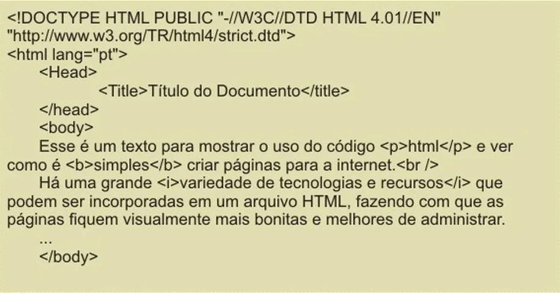

Tags simples no HTML são elementos
usados para estruturar e formatar
conteúdo na web. Exemplos incluem
<p> para parágrafos, <h1> a <h6>
para títulos, <a> para links e
<img> para imagens. Essas tags são
envolvidas por < > e podem conter
atributos para configurar propriedades,
como o atributo "src" em <img> para
definir a fonte da imagem. Atributos em tags HTML
personalizam elementos.
Exemplos incluem src para definir a fonte da imagem
em <img> e "href" para links em <a>.
Atributos controlam comportamento e aparência,
tornando páginas web mais
dinâmicas e acessíveis HTML permite ajustar o estilo de texto,
usando atributos como "color" para a cor e "size" para o tamanho
dentro da tag <font>.
As tags simples com fechamento em HTML são elementos que possuem
uma tag de abertura e uma tag de fechamento correspondente, envolvendo
o conteúdo que deseja ser afetado. Por exemplo, a tag <p> é usada para criar
parágrafos e deve ser fechada com </p>. Outros exemplos incluem <a> para
links e <li> para itens de lista. O conteúdo dentro dessas tags é formatado ou
estruturado de acordo com as propriedades definidas na tag de abertura. Essas
tags com fechamento são essenciais para organizar e apresentar o conteúdo de
forma clara e semântica em páginas da web.

Exemplos.
<area>: Define uma área de imagem sensível em um mapa de imagem.
<base>: Especifica uma URL base para links relativos em uma página.
<br>: Cria uma quebra de linha.
<col>: Define propriedades para colunas em tabelas.
<embed>: Incorpora conteúdo externo, como multimídia ou aplicativos.
<hr>: Insere uma linha horizontal.
<img>: Usada para incorporar imagens.
<input>: Define um campo de entrada em um formulário.
<link>: Vincula recursos externos, como folhas de estilo (CSS) ou ícones de favoritos.
<meta>: Fornece informações de metadados sobre a página.
<source>: Especifica múltiplas fontes de mídia para elementos <audio> e <video>.
<track>: Define trilhas de legenda ou descrição para elementos <video> e <audio>.
<wbr>: Indica um ponto de quebra opcional em texto.
Essas tags são projetadas para cumprir funções específicas e não requerem uma tag de fechamento porque não contêm conteúdo interno.
Exemplos.
<a>: Define um link âncora.
<p>: Define um parágrafo de texto.
<div>: Cria uma divisão ou contêiner genérico para elementos.
<span>: Utilizado para aplicar estilos ou atributos a partes específicas do texto.
<h1>, <h2>, <h3>, <h4>,
<h5>, <h6>: Usadas para títulos e cabeçalhos, onde
cada uma delas precisa ser fechada com a tag correspondente </h1>, </h2>, etc.
<li>: Define um item de lista em uma lista ordenada (<ol>) ou não ordenada (<ul>).
<ol>: Define uma lista ordenada.
<ul>: Define uma lista não ordenada.
<table>: Define uma tabela.
<tr>: Define uma linha em uma tabela.
<td>: Define uma célula de dados em uma tabela.
<th>: Define uma célula de cabeçalho em uma tabela.
<form>: Define um formulário HTML.
<input>: Define um campo de entrada em um formulário.
<textarea>: Define uma área de texto multilinha em um formulário.
<button>: Cria um botão clicável.
Utilizar tags corretamente no HTML é fundamental para a construção de páginas
da web eficientes e acessíveis. A importância disso pode ser destacada por
diversos motivos:
Semântica: Tags apropriadas conferem significado ao conteúdo, facilitando
a interpretação por parte dos motores de busca e leitores de tela, melhorando a
acessibilidade.
Organização: As tags estruturam o conteúdo, tornando-o mais legível e
organizado para desenvolvedores e designers, o que facilita a manutenção e
colaboração em projetos.
Estilo e Layout: Tags adequadas servem como pontos de ancoragem para
aplicação de estilos CSS, permitindo um controle preciso sobre a aparência da
página.
Compatibilidade: O uso correto de tags garante que o site seja renderizado
de forma consistente em diferentes navegadores e dispositivos.
Acessibilidade: Tags apropriadas e atributos como o "alt" em imagens
tornam a web mais inclusiva, garantindo que pessoas com deficiências visuais
possam compreender e interagir com o conteúdo.
SEO: Utilizar as tags corretas e fornecer informações precisas por meio
delas pode melhorar o ranking do site nos resultados de mecanismos de busca.
Validação: Páginas que utilizam tags corretamente são mais propensas a
passar na validação HTML, garantindo que não haja erros ou problemas no código.
Portanto, o uso adequado de tags não é apenas uma boa prática, mas uma parte
essencial da criação de sites de alta qualidade, acessíveis e compatíveis com
padrões da web.
Os atributos em HTML são instruções que podem ser adicionadas às tags para personalizar o comportamento, aparência e funcionalidade dos elementos em uma página da web. Eles fornecem informações adicionais sobre como um elemento deve ser tratado ou exibido. Alguns atributos comuns incluem "src" para especificar a origem de recursos, "alt" para fornecer texto alternativo em imagens para acessibilidade, "href" para definir o destino de links e "class" para aplicar estilos CSS. Os atributos desempenham um papel crucial na criação de páginas da web acessíveis, interativas e bem estruturadas, permitindo um controle mais preciso sobre o conteúdo e o design.
id: Define um identificador único para um elemento.
class: Especifica uma ou mais classes para um elemento, permitindo a aplicação de estilos CSS.
style: Permite a definição de estilos CSS inline para um elemento.
src: Especifica a origem de recursos, como imagens ou scripts.
href: Define o destino de links em elementos como <a> e <link>.
alt: Fornece um texto alternativo para elementos como <img>, usado para acessibilidade.
title: Adiciona um título ou dica de ferramenta para um elemento.
width e height: Definem as dimensões de elementos como imagens e células de tabela.
colspan e rowspan: Usados em células de tabela para mesclar colunas ou linhas.
disabled: Desabilita a interação com um elemento, como um botão ou campo de entrada.
readonly: Define um campo de entrada como somente leitura.
value: Define o valor padrão para campos de entrada.
placeholder: Exibe um texto de exemplo em campos de entrada.
checked: Define um campo de seleção como marcado por padrão.
required: Indica que um campo de entrada é obrigatório.
aria-*: Atributos usados para melhorar a acessibilidade em elementos, como aria-label e aria-describedby.
target: Especifica como o link deve ser aberto (por exemplo, em uma nova janela ou na mesma janela)
rel: Define o relacionamento do link com a página atual, usado principalmente com tags <link> e <a>
type: Especifica o tipo de conteúdo em elementos como <script> e <style>
for: Vincula um rótulo a um campo de entrada em um formulário
name: Define o nome de elementos, geralmente usado com campos de entrada em formulários
placeholder: Exibe um texto de exemplo em campos de entrada
max e min: Estabelecem limites para valores em campos de entrada numéricos
step: Define o incremento usado em campos de entrada numéricos
download: Indica que um link deve fazer o download de um recurso em vez de navegar para ele
autofocus: Define que um campo de entrada deve receber automaticamente o foco quando a página é carregada
autocomplete: Controla se a autocompletar deve estar habilitada ou desabilitada em campos de entrada de formulário
contenteditable: Permite que um elemento seja editável pelo usuário
hidden: Oculta um elemento na página
media: Define as condições de mídia nas quais um estilo CSS ou script JavaScript deve ser aplicado, geralmente usado com a tag <link>